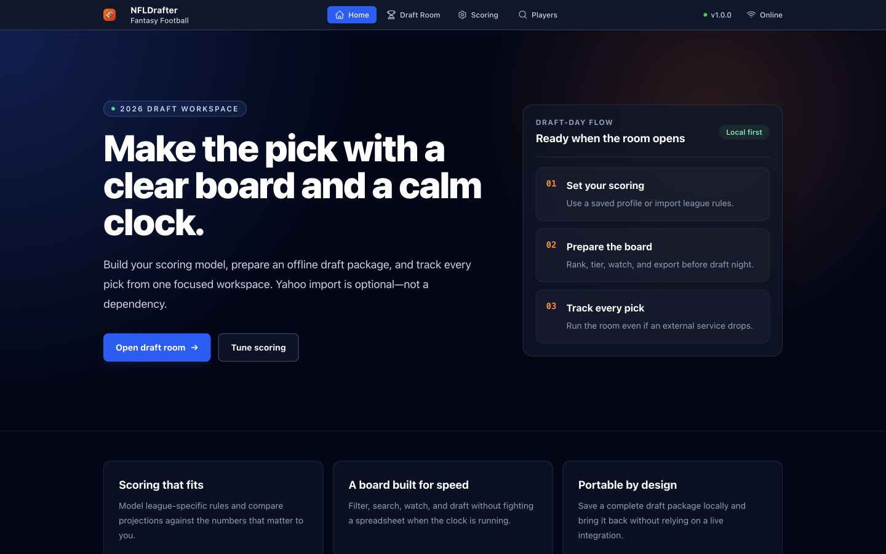
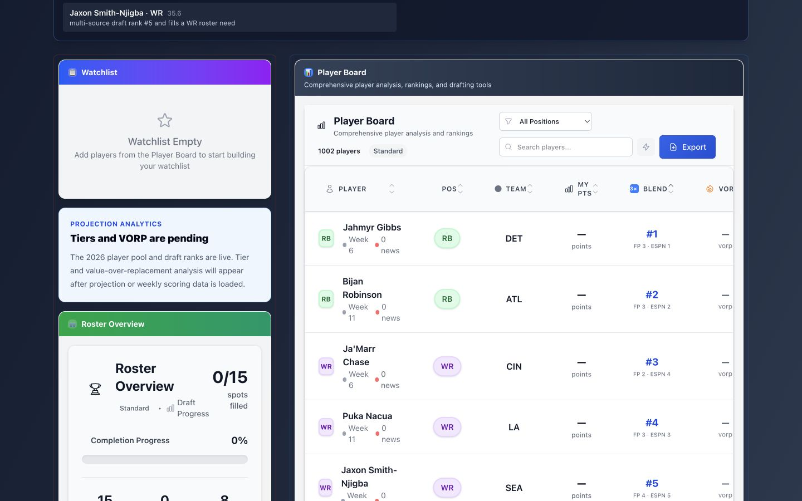
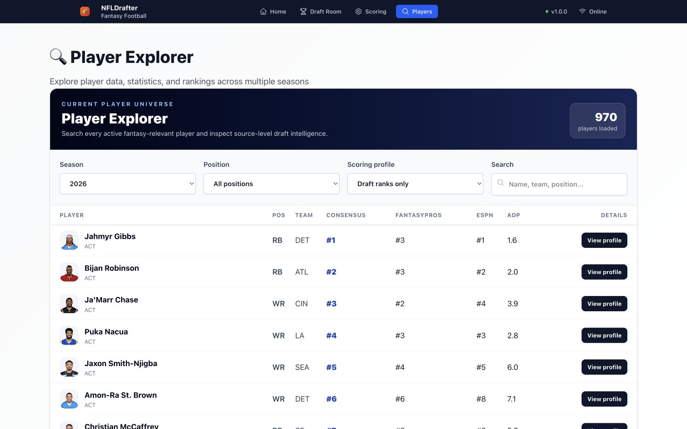
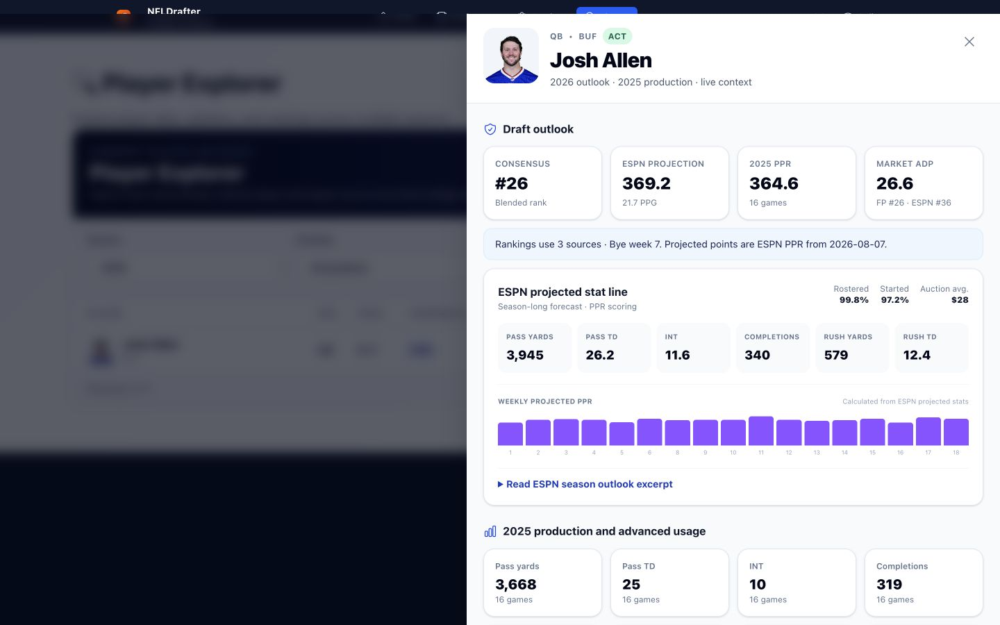
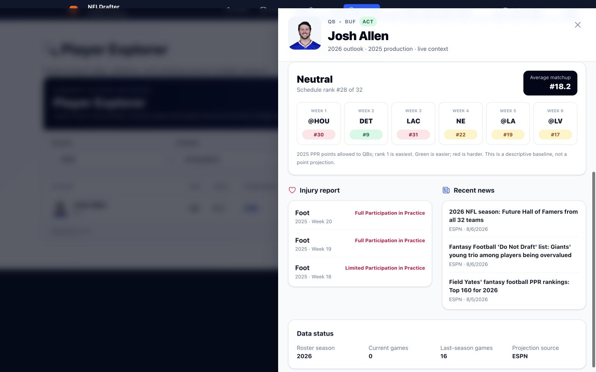
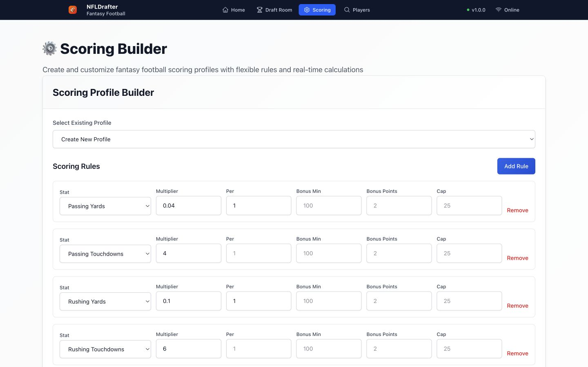

A clear board for a chaotic draft.
Search a complete 1,002-player fantasy pool, prepare custom scoring, blend expert and market rankings, track a snake draft, and keep making picks even if an external integration disappears.

Details without leaving the decision.
Open the same profile from the Player Explorer or Draft Room. Last-season production, position-specific usage, ESPN projections and ownership, modeled schedule strength, official injuries, and linked news stay together. Projection-scored tiers and VORP remain clearly marked as the next milestone.
Rankings with visible provenance.
NFLDrafter does not present every rank as the same kind of evidence. Each source is timestamped and its canonical-player match coverage is available from the API.
Manual first. Yahoo optional.
The prepared player board, scoring profile, roster settings, and rankings can be exported as a checksummed package. The live draft workflow persists in the browser and does not depend on Yahoo remaining connected.

Built for the clock.



